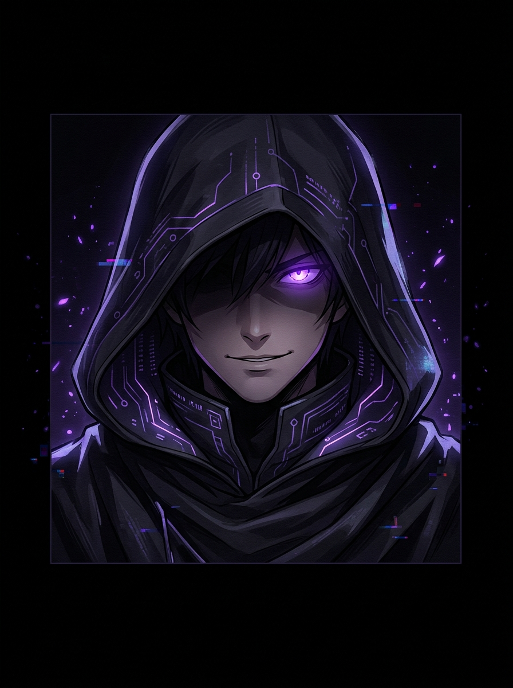

Project: Midnight Sanctuary
夜の電脳空間
接続開始
v2.7.1 // 夜の電脳空間 PROTOCOL
▼

Operator
▶ Click to continue
🌙
OtakuOS
Terminal Protocol v2.7.1
📜
Chronicle Engine (記録)
Anime, Manga, Games, Dev Builds
🏴
Black Market (闇市)
GitHub Repositories & Artifacts
⚔️
Boss Raid Console (端末)
Interactive CLI Shell
OtakuOS
💬 Initializing...
📡 --ms
CRT
🔇
🕐 --:--:-- JST
⛔ Access Denied
この端末はフルサイズ表示が必要です。
Operator
"This terminal requires a full-size display. Come back when you've got proper hardware. ...Or at least a wider screen."
Project: Midnight Sanctuary v2.7.1